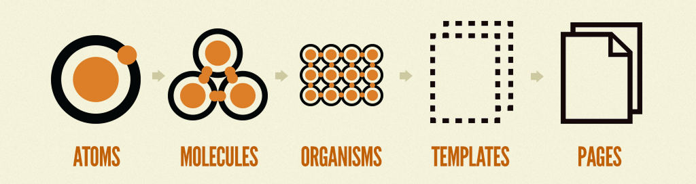
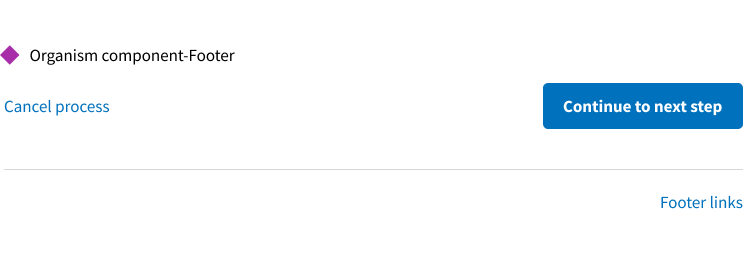

Overview
Problem
When I first started in the VA portfolio, our project was very barebones when it came to the design library in both actual components and documentation. Our design library was situated in Sketch,so features were not 1:1 to Figma and more limited. The little components we did have designed out did not have autolayout and documentation consisted of a few Word documents thrown into a shared team OneDrive.
This led to inefficiency when trying to meet our deliverables on time and inconsistency, since designs had to be adjusted pixel by pixel and colors were not standardized. This process, paired with the lack of standarization of UX reviews across development teams, resulted in a loss of fidelity between designs and the final product in our software environments.
Challenges faced
- Resource limitation was limited due to the small team size of only 3 UX designers.
- Frequent deprioritization due to stakeholder requests taking precedence.
- Transfer and learning curve of design system from Sketch to Figma.
Timeline
June 2022-Present
Role
UX Designer
Solution breakdown
Learn how to use Figma and leverage more advanced features to organize and enhance design system.
Our UX team worked for a few months in Sketch before we had to make the transfer over to Figma. We quickly copied over our existing design files and design system over to Figma and took a few weeks to get used to working in a new program.
We worked on organizing and enhancing the design system in between different initiatives. Specifically, we focused on creating variants for our components and using autolayout not only for our components, but our design files themselves. (Pre-autolayout days are...painful to talk about to be honest.)

Eventually, we decided to follow the atomic design system standard for our own system. Atomic was defined as a component that was the simpliest building block. It could be used to build bigger components, but on its own it still was usable and had context behind it.




From there, we explored using properties, variables, slots for our components. The introduction of variables allowed us to create design tokens that we could map to different specs for our compoents (i.e, padding, colors, etc.)
We built our primitive tokens first and cleaned up our color naming structure so it followed the structure in the VA design systems. Then our semantic tokens were built off our primitive tokens and were named by usage-Components (narrowed down by type of component, atom or molecule, and the specific component's name) or Typography.


Molecule components had less design tokens associated with them given that they were built off of atom components. We found this separation worked best for us, so we could easily find the tokens associated to a specific component in case we wanted to change the values. Typography was less variable from component to component, so it worked better being its own section of design tokens to make them easier to find.
By the time I left, our small team of three had created over 100 components, modernizing both new and existing ones with autolayout, properties, variables, and slots. Colors were documentated and attached to design tokens according to their variable names on USWDS. Common layout and spacing values were also attached the tokens and attached to their corresponding components.


We had also started assembling a pattern library to share externally with devs and a tech debt log for components, styles, and patterns that had a reported gap between design and code. And to take a step even further, I had begun experimenting with Framelink MCP servers to connect AI to our designs and improve our design handoff process even more for devs.
Reflections
The way we approached the problem of an outdated and disorganized design system was, as I reflect on it now, a bit backwards.
If I had a chance to approach it again or approach another design system again, I'd first focus on the organiztion of it (what methodology we'd want to use), audit it for discrepencies between development and design and identify where the component needs to be fixed, and then shift to enhancing it.
After the audit documentation and the enhancements are done, I'd move to the MCP server work.